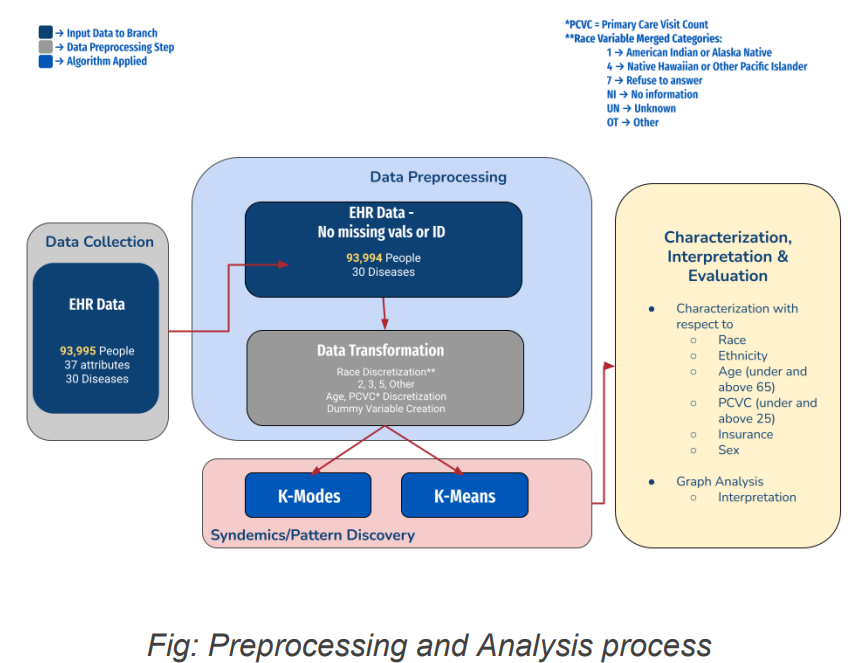
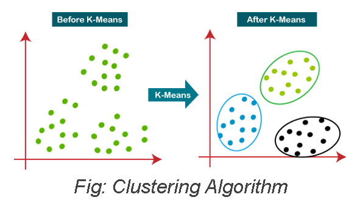
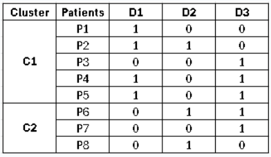
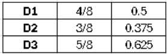
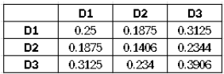
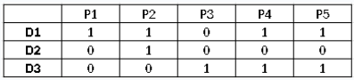
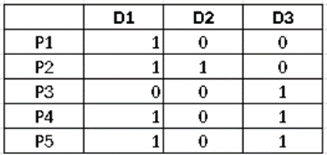
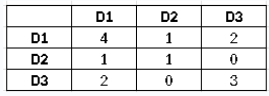
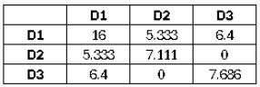
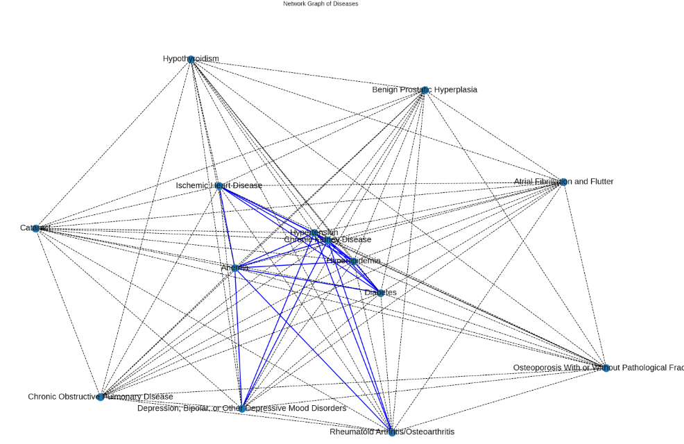

Introduction: Rethinking Healthcare with Syndemics
Traditional healthcare models focus on treating diseases in isolation. However, in reality, multiple diseases often coexist and interact, especially within specific socio-economic and environmental contexts. This interconnectedness—where diseases amplify each other’s negative effects—is the foundation of the syndemics framework. By applying machine learning and network analysis to patient health data, researchers have made significant strides in identifying and understanding these complex relationships. This approach enables more comprehensive patient care, particularly for marginalized populations disproportionately affected by specific disease clusters.
The concept of syndemics represents the synergistic interaction of two or more diseases or health conditions that exacerbate the negative health outcomes associated with each individual condition. Unlike traditional models of disease that treat health issues in isolation, the syndemic framework acknowledges that multiple health challenges often coexist and interact, creating a complex web of health disparities.
Key Characteristics of syndemics include both biological and social interactions between diseases. These interactions are significantly influenced by various social, environmental, and economic factors that drive the interconnectedness of health conditions. For instance, the presence of one disease may compromise the body’s immune response, making individuals more susceptible to other diseases. Conversely, social determinants such as poverty, lack of access to healthcare, and social stigma can further complicate disease management, leading to worse health outcomes. Research has shown that the combination of conditions within a syndemic context can lead to more severe health outcomes than any single condition alone. For example, one of the earliest identified syndemics involves HIV/AIDS, which serves as a critical component in disease interactions. HIV is not only a standalone health issue but is also greatly affected by social and structural conditions such as poverty, marginalization, gender inequality, malnutrition, and stigma (Singer, 2017). This interdependence illustrates the need for a comprehensive approach to healthcare that considers the broader context in which diseases manifest and interact. By understanding syndemics, healthcare providers can better address the multifaceted nature of health issues and ultimately improve patient outcomes.
Project Goals
This project aims to revolutionize patient care by identifying potential Syndemics— disease clusters influenced by social, environmental, and psychological factors. By implementing clustering methods and calculating the Observed-to-Expected Ratio (OER), we aim to determine the presence of disease Syndemics and their impact on treatment outcomes. Our innovative approach leverages a dataset of 95,000 patients from Chicago, focusing on how social components drive disease clustering, particularly among outliers, who show a disproportionate representation of black patients. Initial analysis has already revealed significant correlations between socio-economic factors and health conditions, demonstrating the value of this holistic framework in healthcare. Through our findings, we aim to enhance physicians' ability to provide tailored treatments, ultimately improving patient outcomes.
Motivation: Multidimensional Approach to Medicine
In the evolving landscape of healthcare, a multidimensional approach to medicine is essential for enhancing patient outcomes. This approach emphasizes the need for Personalized Diagnosis, which involves identifying specific disease clusters in patients. By understanding the unique interplay of diseases within an individual, healthcare providers can deliver more accurate and comprehensive diagnoses. This tailored diagnostic process takes into account not only the medical symptoms but also the socioenvironmental factors that may contribute to a patient's overall health. Moreover, the multidimensional framework fosters the development of Integrated Treatment Plans. These holistic strategies aim to address multiple co-occurring conditions simultaneously, recognizing that diseases often do not exist in isolation. By incorporating the socio-environmental drivers that influence health outcomes—such as socioeconomic status, access to healthcare, and social support systems—integrated treatment plans can be more effective in managing complex health scenarios. This approach ultimately leads to more efficient use of healthcare resources and improved patient satisfaction, as treatments are designed to meet the diverse needs of individuals rather than merely targeting singular health issues. By embracing this multidimensional perspective, we can transform healthcare delivery into a more patient-centered, effective system that acknowledges the complexity of human health.
The Research: A Data-Driven Approach to Disease Clustering
Our study focuses on 95,000 patients from Chicago, analyzing disease clusters through machine learning algorithms and network analysis. The hypothesis is that disease clusters are significantly influenced by social determinants of health, such as race, ethnicity, sex, and insurance status. To test this, we examined outlier patients—those who visited primary care physicians more than 25 times over seven years—and found that this group was predominantly Black, highlighting potential disparities in healthcare access and outcomes.
Our inclusion criterion specifically focused on records from family and general internal medicine, resulting in a dataset comprising 93,994 patient records spanning from January 1, 2016, to December 31,2022.
During the data preparation process, we excluded one patient record due to a missing value in the "Sex" attribute. The final dataset contains 36 attributes, which include:
- 30 disease attributes: These diseases are encoded in a binary format, where a value of 0 indicates the absence of the disease, while a value of 1 indicates its presence.
- 6 descriptive attributes: These include key demographic and healthcare utilization factors: “Age,” “Sex,” “Race,” “Hispanic,” “Primary Care Visits,” and “Insurance.”
Data Processing and Analysis Steps
Methodology: Clustering Techniques and Network Analysis
In this study, we employ a multifaceted methodology to explore the intricate relationships between various health conditions using advanced analytical techniques. Our primary focus is on utilizing machine learning techniques to identify patterns and interactions among multiple health conditions.
I. Machine Learning Goal: Clustering Techniques
The goal of our machine learning approach is to implement clustering techniques that reveal underlying patterns and associations among diverse disease states. By analyzing the dataset, we expect to identify distinct clusters that represent groupings of patients based on their similarities concerning diseases and socio-economic factors. These clusters will provide valuable insights into the co-occurrence of conditions, potentially highlighting critical disease syndemics that warrant further investigation.
II. Observed-to-Expected Ratio (OER)
An integral aspect of our analysis includes the calculation of the Observed-to-Expected Ratio (OER). This metric will allow us to assess the extent to which observed disease interactions deviate from what would be expected if the diseases occurred independently. By comparing the actual prevalence of disease clusters to the expected prevalence, we can identify significant syndemic relationships and discern how socio-environmental factors contribute to these interactions.
OER Calculation steps(taken):
- Calculate Expected Coexistence : b x c
- Calculate the disease prevalence in the entire population (disease_prevalence).
- Calculate the expected coexistence of disease pairs in the entire population.
- Outer product of disease_prevalence with itself
- Entry at position (i, j) is expected coexistence of diseases i and j under assumption of independence
- Calculate Observed coexistence per cluster : a
- Multiplying the transposed DataFrame (cluster_df.T) with the original DataFrame (cluster_df), where cluster_df = cluster dataset.
- OER per Cluster = a / (b x c)
Comorbidity Strength formula:
- Observed to Expected Ratio (OER) = Observed co-existence of disease pair / Expected co-existence of a disease pair under the assumption of independence
-
OER(Di,Dj) = a / ( b * c )
- a = proportion of coexistence of diseases i and j
- b = prevalence of disease i
- c = prevalence of disease j
Interpreting OER:
- OER > 1 : diseases co-occur more frequently than expected
- OER = 1 : diseases co-occur as expected under independence, suggesting no special relationship
- OER < 1 : diseases co-occur less frequently than expected, which might indicate mutual exclusivity
OER Calculation example
Example Dataset Step1: Disease prevalence (entire population)
Step 2: Expected Coexistence (entire population)
Step3 : Observed Occurrence (per cluster)
- C1T = 
- C1 = 
- C1T @ C1 = 
Step 4: OER = (Observed Occurrence (per cluster) / Expected Coexistence (entire population) 
III. Network Analysis Goal: Representing Disease Interactions
In addition to machine learning clustering, we employ network analysis to represent the interactions between diseases visually. The objective of this approach is to create a graphical representation of prevalent disease interactions, illustrating how various health conditions are interconnected. This network will provide a clearer understanding of the complexity of disease relationships, enabling us to visualize the multi-dimensional nature of health and identify critical pathways that may influence treatment outcomes. By integrating machine learning and network analysis, our methodology aims to uncover the nuanced interplay of diseases and socio-economic factors, ultimately contributing to a more comprehensive understanding of patient health and informing the development of personalized treatment strategies.
Key Findings: Disease Interactions and Syndemics
Cluster Analysis: K-Means and K-Modes
In our study, we clustered the data using 30 disease attributes, which allowed us to identify patterns and relationships among various health conditions. To achieve this, we implemented two clustering algorithms: K-Modes and K-Means.
To determine the optimal number of clusters, we utilized elbow plots, leading us to establish k=16 as the most suitable choice for our analysis. This method enabled us to visualize the point at which the addition of more clusters yields diminishing returns, confirming that 16 clusters provide a balanced representation of the data.
To assess the quality of the clusters generated by both the K-Modes and K-Means algorithms, we employed two metrics: Silhouette Scores and the Adjusted Rand Index (ARI).
- Silhouette Scores provide insight into the cohesiveness of clusters by measuring how similar an object is to its own cluster compared to other clusters. Higher silhouette values indicate better-defined clusters.
- The Adjusted Rand Index (ARI) quantifies the agreement between the clustering results and a ground truth partitioning, taking into account the chance grouping of elements. A higher ARI value signifies a more accurate clustering relative to the true labels.